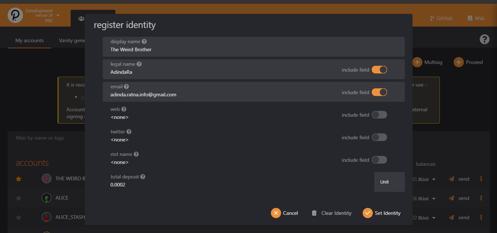
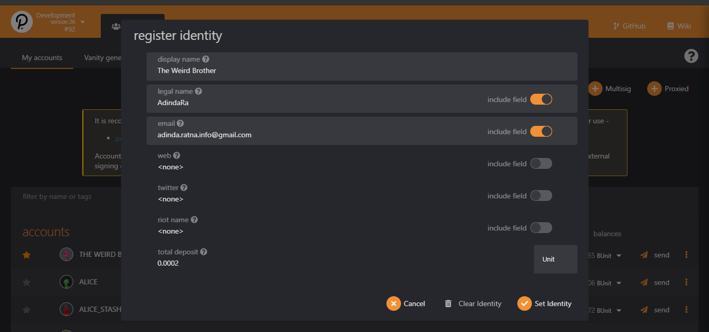

$ sudo apt update
$ sudo apt install -y build-essential ocaml ocamlbuild automake autoconf libtool wget python libssl-dev git cmake perl pkg-config curl llvm-10 clang-10 libclang-10-dev
$ curl --proto '=https' --tlsv1.2 -sSf https://sh.rustup.rs | sh
$ source ~/.cargo/env
$ curl -sL https://deb.nodesource.com/setup_current.x | sudo -E bash -
$ sudo apt-get install -y nodejs
$ rustup --version
$ cargo --version
$ llvm-ar-10 --version
$ node --version
$ git clone https://github.com/substrate-developer-hub/substrate-node-template.git
$ cd substrate-node-template
$ make init
$ make build
./target/release/node-template --name TheWeirdBrother --dev --tmp
$ git clone https://github.com/paritytech/polkadot.git
$ cd polkadot
$ cargo build --release
$ rustup toolchain install nightly-2020-10-06
$ rustup install nightly-2020-10-06
$ rustup target add wasm32-unknown-unknown --toolchain nightly-2020-10-06
$ rustup install cargo +nightly-2020-10-06
$ cd polkadot
$ cargo +nightly-2020-10-06 build --release
$ cargo install --git https://github.com/paritytech/polkadot --tag <version> polkadot --locked
./target/release/polkadot --name TheWeirdBrother --dev
{"RefCount": "u8"}


 
